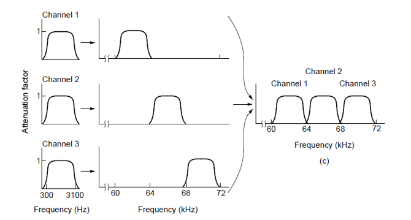
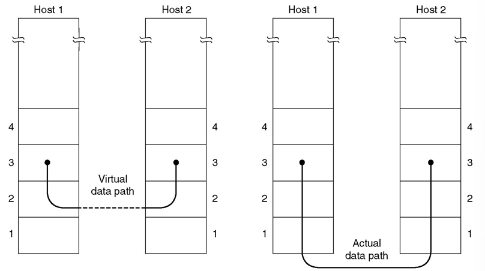
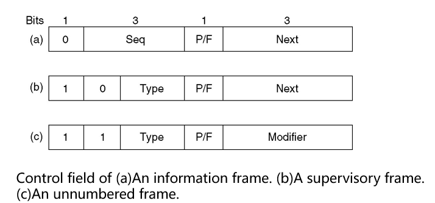
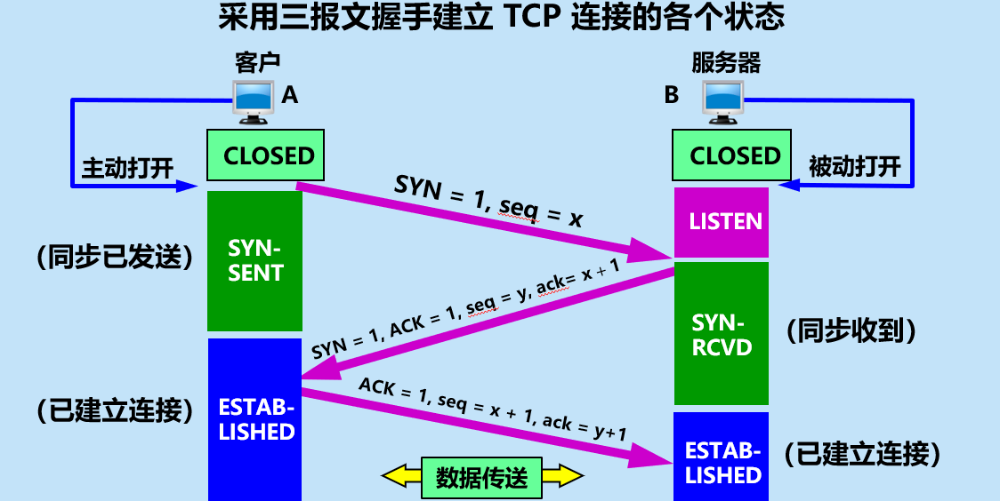

It is the identity induction shows that the space of path starts at a fixed point is contractible
# 第一章
-
计算机网络的定义：
A computer network is a collection of autonomous computers interconnected by a single technology.
-
计算机网络硬件 (physical)、软件 (logical) 的约束：
- Hardware(Physical):
- Personal Area Networks (PAN)
- Local Area Networks (LAN)
- Metropolitan Area Networks (MAN)
- Wide Area Networks (WAN)
- Internet works (internet)
- Software(Logical):
- Layers: most networks are organized as a stack of layers or levels, each one built upon the one below it.
- Protocols: describe how two communicating parties exchange information.
- Services: describe what a network offers to parties that want to communicate.
- Interfaces: describe how a client can make use of network services, i.e. how the services can be accessed.
-
计算机网络的分类
根据传输手段：Broadcast、Point-to-point
根据网络规模：PAN、LAN、MAN、WAN、internet
-
Broadcast 特征：
- Using a single communications channel.
- The channel is shared.
- Information sent from any one machine on the network is received by all other machines on the network.
- Each piece of data received by a computer is checked to see whether it is addressed to that computer.
- Broadcast networks allow data to be addressed to every machine on the network. This allows one machine to “broadcast” a message to all other machines.
- It is possible to “broadcast” to a subset of the machines on the network. This is known as “multicasting”.
-
Point-to-point 特征：
- As a general rule, point-to-point is used in larger networks while broadcasting is used in smaller, geographically localized networks. There are exceptions.
- Point-to-point is sometimes referred to as unicasting.
-
PAN 相关：
- A network meant for one person.
- A personal computer network:
- a wireless keyboard and mouse
- a networked printer
- a PDA connection
- Devices to control pacemakers
- Remote controls for car stereos
-
LAN 相关：
-
WAN 相关：
- A WAN spans a large geographical area, often a country or continent.
- The user computers intended for running user (application) programs are called hosts.
- Host computers are connected via a communication subnet to carry messages from host to host.
- In most WANs, the subnet consists of transmission lines and switching elements (routers).
- Transmission lines move bits between machines.
- They can be made of copper wire, optical fiber, or even radio links.
- Most companies do not have transmission lines lying about, so instead they lease the lines form a telecommunications company.
- A router is a specialized piece of switching hardware that connect two or more transmission lines and is responsible for determining the direction that data packets should be sent.
- When data arrive on an incoming line, the switching element (router) must choose an outgoing line one which to forward them.
- The routers will usually connect different kinds of networking technology.
- Many WANs will in fact be internetworks, or composite networks that are made up of more than one network.
-
Gateway:
A kind of machine make the different network connected and provide the necessary translation, both in terms of hardware and software.
-
internet & subnet:
- internet: internetworks
- subnet: It makes the most sense in the context of a WAN, where it refers to the collection of routers and communication lines owned by the network operator.
-
Internet 相关:
- the best known network.
- The worldwide Internet is a vast collection of different networks that use certain common protocols and provide certain common services.(hardware: internet)
- The Internet runs according to the TCP/IP protocol. (software:TCP/IP)
-
Layer 特征：
- Each layer offers certain services to the higher layer.
- Each layer shields the details of how the offered services are implemented.
-
why do we need a Network architecture? How about the networks realization structure?
IDEA: Divide and Rule
-
The networks are organized as a stack of layers.
-
Each layer builds upon the layer below it. The purpose of a layer is to offer services to the layer above it, shield the details of how the offered services are implemented.
-
-
Protocol 简介：
-
A protocol is an agreement between the communicating parties on how communication is to proceed.
-
e.g. HTTP; FTP; TCP; IP; PPP.
-
Key factor:
-
Syntax: the format of data and control information.
-
Semantics: specific actions taken when messages received.
-
Synchronization: order of messages sent and received among network peers.
-
Entity: Any kind of software process, hardware devices, or even human beings, which can send or receive messages.
-
Peer: The entities comprising the corresponding layers on different machines. It is the peers that communicate by using the protocol to talk to each other.
-
Interface: defines which primitive operations and services the lower layer makes available to the upper one.
It locates between each pair of adjacent layers, also called as Service Access Point (SAP).
-
-
Network Architecture:
A set of layers and protocols is called a network architecture.
-
Pros and Cons of Protocol Hierarchies
Advantages:
- The function in each layer is independent. The adjacent layers are connected by interfaces.
- Flexibility. The change of one layer would not influence other layers
- Hierarchy Structure
- The implementation and maintenance are both much easier. Reduce design complexity.
- Standardization.
Disadvantages:
- The more layers of the network protocol hierarchies get, the more spending are needed.
- The network architecture using different protocol stacks can not communicate with each other.
-
Design Issues for the layers
- Reliability: 差错控制、动态路由
- The evolution of the network：addressing/naming，分段
- Resource allocation：多路复用，流量控制
- Network security
-
服务的分类：Connection-Oriented & Connectionless Services
- Connection-oriented: 三个阶段：Establish a connection, use the connection, release the connection. e.g. Phone system
- Connectionless: 两个实体之间的通信不需要先建立好连接。 e.g. Postal System
- Each kind of service can further be characterized by its reliability.
- Usually, a reliable service is implemented by having the receiver acknowledge the receipt of each message so the sender is sure that it arrived.
- The acknowledgement process introduces overhead and delays, which are often worth it but are sometimes undesirable.
-
服务原语 Service Primitives：
-
A service is formally specified by a set of primitives (operations) available to a user process to access the service.
-
Five service primitives for implementing a simple connection-oriented service:
-
-
Reference Models:
-
Open Systems Interconnection (OSI) Reference Model: Although the protocols associated with the OSI model are not used any more, the model itself is actually quite general and still valid, and the features discussed at each layer are still very important.
-
Layers created for different abstractions.
-
Each layer performs well-defined function.
-
Function of layer chosen with definition of international standard protocols in mind.
-
Minimize information flow across interfaces between boundaries.
-
Number of layers optimum.
The OSI model itself is not a network architecture because it does not specify the exact services and protocols to be used in each layer. It just tells what each layer should do.
However, ISO has also produced standards for all the layers, although these are not part of the reference model itself. Each one has been published as a separate international standard.
- The TCP/IP model has the opposite properties: the model itself is not of much use but the protocols are widely used.
-
-
OSI 不同层简介：
-
Physical Layer: The physical layer is concerned with transmitting raw bits over a communication channel. 透明的传送比特流，传送单位为比特
-
机械特性：指明接口所用接线器的形状和尺寸、引线数目和排列、固定和锁定装置等等。
-
电气特性：指明在接口电缆的各条线上出现的电压的范围。
-
功能特性：指明某条线上出现的某一电平的电压表示何种意义。
-
过程特性：指明对于不同功能的各种可能事件的出现顺序。
-
Data link Layer: Deals with algorithms for achieving reliable, efficient communication between two adjacent machines at the data link layer. (point-to-point) 保证相邻结点链路上的可靠传输，传输单位为帧
-
Break up the data into data frames.
-
Link control: connection-oriented.
-
Error control : error-detecting and error-correcting.
-
Flow Control: keep a fast sender from swamping a slow receiver.
-
Network Layer: The Network Layer controls the operation of the subnet. A key design issue is to determine how packets are routed from source to destination. 将传输层送来的报文进行分组，选择合适的路由，将分组按地址传送到目的主机。 传输单位为分组
-
To control the operation of the subnet.
-
Routing algorithm.
-
Error control.
-
Congestion control.
-
Transport Layer: Its task is to provide reliable, cost-effective data transport from the source to the destination (end-to-end).
A program on the source machine carries on a conversation with a similar program on the destination machine, using the message headers and control messages. 保证端到端的可靠传输，传输单位为报文
-
Connection management.
-
Error control.
-
Congestion control.
-
QOS control. (Quality Of Service)
-
Session Layer: The session layer allows users on different machines to establish sessions between them. 允许不同机器的用户建立会话关系
-
Dialog control：记录该由谁来传输数据不参与具体的数据传输，对数据传输进行管理。即在两个互相通信的进程中建立、组织、协调交互
-
Synchronization：在数据流中插入检查点，当网络崩溃时，仅传输最后一个检查点以后的数据
-
Token management: 令牌管理。禁止双方同时执行同一个关键操作。
-
Presentation Layer: The presentation layer is concerned with the syntax and semantics of the information transmitted. 主要解决经常被用户请求的通用功能，如传输数据的表示解释，包括格式转换、编码、压缩、加密等
-
According to the users’ need , to make the corresponding change. For instance, data encoding and data encryption. 不同的计算机有不同的内部数据表示，表示层转换为本机可以理解的格式
-
Application Layer: The application layer is the interface between user and the network. It contains a variety of protocols that are commonly needed by the users. 应用层是用户和网络的接口，包含人们普遍需要的多种协议。
-
To provide services to the users not for the upper layer. 不是为上层提供服务，而是直接为最终用户进程提供应用服务
-
-
TCP/IP Model 不同层简介：
- Link Layer: It describes what links such as serial lines and classic Ethernet must do to meet the needs of the connectionless internet layer. Protocol is not defined. It is not really a layer at all, in the normal sense of the term, but rather an interface between hosts and transmission links.
- Internet Layer:
- Key part in TCP/IP Model
- To permit hosts to inject packets into any network and have them travel independently to the destination
- A “best effort” connectionless service: Packets might be lost, Packets might arrive out of order
- Transport Layer:
- Concerned with end-to-end data transfer between end systems (hosts)
- Transmission unit is called segment/user datagram
- TCP/IP networks such as the Internet provides two types of services to applications:
- connection-oriented” service – Transmission control Protocol (TCP)
- “connectionless” service - User Datagram Protocol (UDP)
- Application Layer:
- Containing all the higher-level protocols
- Examples include: HTTP, FTP,Telnet(virtual terminal), SMTP, DNS
-
TCP/IP 协议簇：
-
OSI 和 TCP/IP Model 的比较：
Similarities:
- Both are based on the concept of a stack of independent protocols 基于独立的协议栈的概念。
- The functionality of the layers are roughly similar. 层的功能也大体相似
- The layers below transport layer are all communication-oriented, while the layers above transport layer are all application-oriented. 传输层以下都是面向通信的，而传输层以上都是面向用户的。
Differences:
-
The OSI model clearly distinguishes between service, interface and protocol. But TCP/IP does not. OSI 明确定义了服务、接口、协议 3 个概念。
-
The protocols in the OSI model are better hidden than in the TCP/IP model. OSI 中的协议具有更好的隐藏性。
-
The number of layers is different. 层的数量不同。
-
OSI model supports both Connectionless and connection-oriented communication in the network layer, but only connection-oriented communication in the transport layer.
TCP/IP model supports only connectionless communication in the network layer, but supports both modes in the transport layer.
-
OSI 和 TCP/IP Model 的缺点：
OSI:
- Arrived late on the scene.
- Model was too complex and the protocols were flawed (some stuff appears in multiple levels)
- Poor implementation (no good example)
- Poorly marketed
TCP/IP:
-
没有明确区分服务、接口和协议的概念
-
不通用，不适合描述 TCP/IP 之外的任何其他协议栈
-
链路层不是通常意义上的层，只是一个接口（网络层和数据链路层间的）
-
没有区分物理层和数据链路层
-
网络的例子：Internet、Ethernet、WLAN
Internet(internet): Hardware: internet, router, Software: TCP/IP
Ethernet(LAN): Hardware: wired, hub/switch, Software: IEEE802.3(DIX)
WLAN(LAN): Hardware: wireless, AP, Software: IEEE802.11 (WiFi)
# 第二章 Physical Layer
-
Theoretical Basis for Data Communication
-
Performance:
-
(analog) Bandwidth(Hz): the range of frequencies contained in a composite signal or the range of frequencies a channel can pass.
-
(digital) Bandwidth(bits/seconds): the number of bits per second that a channel, a link, or even a network can transmit.
-
Data rate is the end result of using the analog bandwidth of a physical channel for digital transmission, and the two are related.
-
Nyquist’s theorem: Maximum data rate= bits/second. is the bandwidth(Hz), is number of valid states.
-
Shannon’s formula: the capacity for a noisy channel maximum number of bits/sec=. is the energy of channel and is the energy of noise.
-
Throughput: The throughput is a measure of how fast we can actually send data through a network.
-
吞吐量表示在单位时间内通过某个网络（或信道、接口）的数据量
-
吞吐量更经常地用于对现实世界中的网络的一种测量，以便知道实际上到底有多少数据量能够通过网络。
-
吞吐量受网络的带宽或网络的额定速率的限制。
-
Delay:
-
Transmission Delay: 发送数据时，数据帧从结点进入到传输媒体所需要的时间。为数据帧长度除以发送速率。
-
Propagation Delay: 电磁波在信道中需要传播一定的距离而花费的时间。为信道长度除以信道中信号传播速率。
-
Processing Delay: 交换结点为存储转发而进行一些必要的处理所花费的时间。
-
Queuing Delay: 结点缓存队列中分组排队所经历的时延。排队时延的长短往往取决于网络中当时的通信量。
-
Latency=Transmission Delay + Propagation Delay + Processing Delay + Queuing Delay.
-
Bandwidth-Delay Product (时延带宽积): The bandwidth-delay product defines the number of bits that can fill the link. 链路的时延带宽积又称为以比特为单位的链路长度。 为 Propagation Delay 乘以 Bandwidth
-
-
Transmission Media
Guided Transmission Media: Magnetic media, Twisted pairs, Coaxial cabal, Power lines, Fiber optics.
Wireless Transmission: Electromagnetic Spectrum, Radio Transmission, Microwave Transmission, Infrared Transmission, Light Transmission.
-
Digital Modulation
Digital signals Transmission for analog data
- Pulse Code Modulation
Digital signals Transmission for digital data
- nonreturn-to zero encoding
- Manchester encoding
- differential Manchester encoding
Analog signals Transmission for digital data
- ASK(Amplitude Shift Keying)
- FSK(Frequency Shift Keying)
- PSK(Phase Shift Keying)
- QPSK(Quadrature Phase Shift Keying)
-
Baseband Transmission & Passband Transmission
-
Multiplexing:
Frequency Division Multiplexing:

Time Division Multiplexing:
Code Division Multiplexing
-
Structure of the Telephone System
- Each house has a line connecting it to the nearest end office（端局） of the phone company.
- The end offices are connected to toll offices（长途局）, which are connected to an intermediate switching office（中心交换局）.
- Any connection between two phones must be switched at one of these levels.
- Local loops (本地回路) : analog twisted pair going to house and businesses.
- Trunks （干线 / 中继线）: digital fiber optics connecting the switching offices.
- Switching Offices（交换局） : where calls are moved from one trunk to another.
-
Architecture of the Internet
- The Internet is a network of networks.
- Each individually administrated network is called an Autonomous System (AS).
- We can roughly divide the networks into access networks and transit networks.
-
Accessing the Internet
Using telephone networks:
-
Dial-up (拨号)(narrowband):
-
Modems (调制解调器): convert the digital data to analog form for transmission over the local loop or the reverse conversion (at computer side)
-
Codecs（编解码器）: convert the analog to digital for transmission over long-haul fiber trunks or the reverse conversion (at the end office)
- Digital Subscriber Lines (DSL)(数字用户线)(broadband): 将 1.1MHz 的频谱分成 256 个信道，每个信道 4KHz:
Operation of ADSL（Asymmetric DSL) using discrete multitone modulation（DMT）
A typical ADSL equipment configuration:
- Fiber to the home: Passive optical network(无源光网络，PON) for Fiber To The Home.
- Using Community Antenna Television system
- Internet over Cable: Hybrid fiber-coaxial (HFC) network
-
-
SONET/SDH
SONET/SDH 定义了一组在光纤上传输光信号的速率和格式，采用 TDM 技术。
-
Switching
-
“交换”(switching) 的含义就是转接 — 把一条电话线转接到另一条电话线，使它们连通起来。
-
从通信资源的分配角度来看，“交换” 就是按照某种方式动态地分配传输线路的资源。
电路交换：connection-oriented，三个阶段：建立连接、通信、释放连接。计算机数据具有突发性，这导致通信线路的利用率很低。
分组交换：packet 传输路径可能不同。
Item Circuit Switched Packet Switched Call Setup Required Not required Dedicated physical path Yes No Each packet follows the same route Yes No Is a switch crash fatal Yes No Bandwidth available Fixed Dynamic Time of possible congestion At setup time On every packet Potentially wasted bandwidth Yes No Store and forward transmission No Yes Charging Per minute Per packet Packets arrive in order Yes No -
# 第三章 Data Link Layer
-
Function of Data Link Layer
The data link layer deals with the algorithms for achieving reliable, efficient communication of whole units of information called frames between two adjacent machines. 研究两个相邻机器在数据链路层进行可靠、有效的数据帧通信
-
Data Link Layer 设计要点
- Provide a well-defined service interface to the network layer（Framing）
- Dealing with transmission errors（Error control）
- Regulating data flow of data so that slow receivers not swamped by fast senders（Flow control）
-
Virtual Data Path & Actual Data Path

-
Possible Services Offered
Unacknowledged connectionless service: The source machine sends independent frames to the destination machine without having the destination acknowledge them.
- Low error rate scenario: recovery is left to higher layers.
- Real-time traffic: late data are worse than bad data.
- Ethernet is a good example of a data link layer that provides this class of service. No logical connection is established beforehand and released afterward.
Acknowledged connectionless service.
- There are no logical connections used, but each frame sent is individually acknowledged.
- The sender knows whether a frame has arrived correctly or been lost. If it has not arrived within a specified time interval, it can be sent again.
- This service is useful over unreliable channels.
- 802.11 (WiFi) is a good example of this class of service.
Acknowledged connection-oriented service.
- Three phases: establish the connection, transfer data, release the connection.
- Each frame sent over the connection is numbered, and the data link layer guarantees that each frame sent is indeed received.
- It guarantees that each frame is received exactly once and that all frames are received in the right order.
- It is appropriate over long, unreliable links such as a satellite channel or a long-distance telephone circuit.
-
Framing:
The Physical Layer is only able to put a raw bit stream on the transmission media, We have to be able to break up the bit stream into discrete frames.
Two problems to solve:
- 帧的边界问题（boundary）
- 帧的透明传输（填充）问题 (stuffing)
Methods:
-
Byte count (字节计数法)
-
This method uses a field in the header to specify the number of bytes in the frame.（在帧头部用一个字段来标明帧内字节数）
-
This method can cause problems if the count is garbled in transit.（可能出现由于传输差错而被篡改）
-
The receiver will not know where to pick up and the sender will not know how much to resend.
-
This method is rarely used anymore.
-
Flag bytes with byte stuffing (字节填充的标志字节法)
-
Frames begin and end with special bytes（Flag Byte 标志字节）.
-
Often used are the same start/end flag.
-
If the receiver loss of synchronization, it just looks for two consecutive flag bytes to denote the end of one frame and the start of the next.
-
What happens if the flag byte accidentally occurs in the data?
Byte stuffing is the process of inserting an special escape byte (ESC) just before each accidental flag byte in the data.
What happens if an ESC accidentally occurs in the middle of the data? It is stuffed with an escape byte too.
This is sometimes referred to as character stuffing.（字符填充）
Example used in PPP protocol:
-
Flag bits with bit stuffing (比特填充的标志比特法)
-
Framing can be done at the bit level, so frames can contain an arbitrary number of bits made up of units of any size.
-
Each frame begins and ends with a special bit pattern, 01111110 (0x7E in hexadecimal)
-
Bit stuffing: 在发送端，只要发现有 5 个连续 1, 则立即填入一个 0。
-
接收端对帧中的比特流进行扫描，每当发现 5 个连续 1 时就把这 5 个连续 1 后的一个 0 删除。
-
主要用于 HDLC（高级数据链路控制）
-
Physical layer coding violations (物理层编码违例法)
-
Error Control:
How to make sure all frames are eventually delivered to the network layer at the destination and in the proper order?
- Q: Suppose something went wrong during frame transmission. How do we actually notice that something is wrong, and can it be corrected by the receiver?
A: Acknowledgment, Error Detection and Error Correction
- Q: Suppose the packet was lost on the way. How do the sender notice it?
A: Timers and Retransmission
- Q: How to do if a frame was transmitted multiple times?
A: Sequence Numbers for each frame.
使用上述的确认和重传机制，我们就可以在不可靠的传输网络上实现可靠的通信。
这种可靠传输协议常称为自动重传请求 ARQ (Automatic Repeat reQuest)。ARQ 表明重传的请求是自动进行的。接收方不需要请求发送方重传某个出错的分组。只要超时没有收到接收方的 acknowledgement，发送方就会自动重传。
-
Flow Control:
To solve the problem that a sender wants to transmit frames faster than the receiver can accept them.
- Feedback-based flow control: feedback is used to tell the sender how the receiver is doing or to send another frame, and used in data link layer or higher layers.
- Rate-based flow control: 限制发送方的发送数据的速率，seen as part of the transport layer.
-
Error Detection and Correction:
Types of errors: Single bit errors, Burst errors.
Basic strategies for dealing with errors:
- Error-correcting codes (FEC)
Forward Error Correction: to include enough redundant information along with each block of data sent (error-correcting codes), to enable the receiver to deduce what the transmitted data must have been.
- Error-detecting codes
Error detection and Retransmission: to include only enough redundancy to allow the receiver to deduce that an error occurred, but not which error (error-detecting codes), and have it request a retransmission.
- Automatic Repeat reQuest (ARQ)
-
Terms:
- A frame consists of m data (i.e. message) bits and r redundant (i.e. check) bits.
- In a block code, the r check bits are computed solely as a function of the m data bits with which they are associated.
- In a systematic code, the m data bits are sent directly, along with the check bits, rather than being encoded themselves before they are sent.
- In a linear code, the r check bits are computed as a linear function of the m data bits. Exclusive OR (XOR) or modulo 2 addition is a popular choice.
- An n-bit unit containing data and check bits is referred to as an n-bit codeword.
- The code rate is the fraction of the codeword that carries information that is not redundant, or m/n.
- The number of bit positions in which two codewords differ is called Hamming distance.
-
Error-Correcting Codes:
Hamming Codes:
Binary convolutional codes (二进制卷积码)
Reed-Solomon codes (里德所罗门码)
Low-density parity check codes (低密度奇偶校验码)
-
Error-Detecting Codes:
Parity (奇偶校验)
- Interleaving of parity bits to detect a burst error:
Checksums (检验和)
-
Concept: a group of check bits associated with a message, regardless of how are calculated.
-
At the source, the message is first divided into m-bit unit called checksum, which is sent with the message.
At the destination, the checker creates a new checksum from the combination of the message and sent checksum. If the new checksum is all 0s, the message is accepted; otherwise, the message is discarded.
-
Note that in the real implementation, the checksum unit is not necessarily added at the end of message; it can be inserted in the middle of the message.
-
The Internet Checksum, used in IP, TCP, UDP:
Cyclic Redundancy Checks (CRC, 循环冗余校验)
-
One of the most common and powerful error-detecting codes
-
Given a k bit block of bits, the transmitter generates an (n – k) bit frame check sequence (FCS) which is exactly divisible by some predetermined number.
-
Receiver divides the incoming frame by that number.
-
A checksum is generated for the message. The checksum, when divided by the generator polynomial, will have no remainder. If a remainder exists, then there has been an error in transmission.
CRC-16 (USB)
CRC-ITU (HDLC, PPP)
CRC-32
(LANS, PPP)
-
Example: . Then we add 0s to the end of data, and divide it by 10011:
The receiver would just divide the Data+Remainder by , if there is no remainder, then the data is transmitted correctly.
-
Elementary Data Link Protocols:
MAX_PKT : 定义一个帧允许的最大字节数
seq_nr: 整数，帧的编号， 0≤seq_nr≤MAX_SEQ
packet：同一台机器的网络层与数据链路层之间或相互通信的两个机器的网络层对等实体间交换的信息单元
帧的组成：
kind：指出帧中是否有数据。有的帧是控制帧，有的帧是包含了控制信息的数据帧
seq：用于帧的序号
ack：对帧进行确认的编号
info：数据帧的 info 就是网络层传下来的的分组； 控制帧的 info 字段无用
-
Utopian Simplex Protocol:
Suppose:
- Data are transmitted in one direction only;
- Both the transmitting and receiving network layers are always ready;
- Processing time can be ignored;
- Infinite buffer space is available;
- The communication channel between the data link layers never damages or loses frames.
Sender:
1
2
3
4
5
6
7
8
9
10
>void sender(){
frame s;
packet buffer;
while(true){
from_network_layer(&buffer);
s.info = buffer;
to_physical_layer(&s);
}
>}Receiver:
1
2
3
4
5
6
7
8
9
10
>void receiver(){
frame r;
event_type event;
while(true){
wait_for_event(&event); // wait for frame arrive
from_physical_layer(&r);
to_network_layer(&r.info);
}
>} -
Simplex Stop-and-Wait Protocol for an Error-Free Channel
Drop the most unrealistic restriction used in Utopian Simplex Protocol i.e. Infinite buffer space is available. (去掉缓冲区空间无穷大的条件)
How to prevent the sender from flooding the receiver with data faster than the latter is able to process them?
- A general solution to it is to have the receiver provide feedback to the sender. (a little dummy frame)
- Protocol in which the sender sends one frame and then waits for an acknowledgement before proceeding are called stop-and-wait.
Sender:
1
2
3
4
5
6
7
8
9
10
11
12
>void sender(){
frame s;
packet buffer;
event_type event;
while(true){
from_network_layer(&buffer);
s.info = buffer;
to_physical_layer(&s);
wait_for_event(&event); // Do not proceed until given the "go ahead".
}
>}Receiver:
1
2
3
4
5
6
7
8
9
10
11
>void receiver(){
frame r, s;
event_type event;
while(true){
wait_for_event(&event);
from_physical_layer(&r);
to_network_layer(&r.info);
to_physical_layer(&s); // send the "go ahead" dummy frame to sender.
}
>} -
Simplex Stop-and-Wait Protocol for a noisy Channel:
Now let us consider the normal situation of a communication channel that makes errors. Frames may be either damaged or lost completely.
Q: A sender does not know whether a frame has made it (correctly) to the receiver.
A: let the receiver acknowledge undamaged frames.
Q: Frame (acknowledgments) may get lost.
A: let the sender use a timer by which it simply retransmits unacknowledged frames after some time.
Q: The receiver cannot distinguish duplicate transmissions.
A: use sequence numbers.
Sender:
1
2
3
4
5
6
7
8
9
10
11
12
13
14
15
16
17
18
19
20
21
22
23
24
25
>void sender(){
seq_nr next_frame_to_send;
frame s;
packet buffer;
event_type event;
next_frame_to_send = 0;
from_network_layer(&buffer);
while(true){
s.info = buffer;
s.seq = next_frame_to_send;
to_physical_layer(&s);
start_timer(s.seq);
wait_for_event(&event);
if (event == frame_arrival){
from_physical_layer(&s);
if (s.ack == next_frame_to_send){
stop_timer(s.ack);
from_network_layer(&buffer);
next_frame_to_send++;
}
}
}
>}Receiver:
1
2
3
4
5
6
7
8
9
10
11
12
13
14
15
16
17
18
19
20
>void receiver(){
seq_nr frame_expected;
frame r, s;
event_type event;
frame_expected = 0;
while(true){
wait_for_event(&event);
if (event == frame_arrival){
from_physical_layer(&r);
if (r.seq == frame_expected){
to_network_layer(&r.info);
frame_expected++;
}
s.ack = frame_expected - 1;
to_physical_layer(&s);
}
}
>}
Protocols in which the sender waits for a positive acknowledgement before advancing to the next data item are often called PAR (Positive Acknowledgement Retransmission) or ARQ (Automatic Repeater reQuest)
-
Sliding Window Protocols: One-Bit Sliding Window Protocol, Go-Back-N, Selective Repeat
-
Problem(From Simplex to Duplex): We want to allow symmetric frame transmission between two communicating parties, rather than transmission in one direction. Don’t waste channels, so use the same channel for duplex communication.
-
Principle: Use the same link for data in both directions, and interleave data and control frames on the same link.
-
piggybacking: The technique of temporarily delaying outgoing acknowledgements so that they can be hooked onto the next outgoing data frame. （ack 和需要的发送的数据一起发送）
Q: How to improve the channel utilization ?
A: Rather than just sending a single frame at a time, permit the sender to transmit a set of frames.
Q: How to keep a fast sender from swamping a slower receiver with data?
A: Flow control–taking use of sliding window to limit frame send.
Sending Window: The sequence number within the sending windows represent frames that have been sent or can be sent but as yet not acknowledged. 允许发送帧的序号（在没有收到对方确认信息时，发送端最多允许发送多少帧）
Receiving Window: The receiving window corresponds to the frames it may accept. Any frame falling outside the window is discarded without comment. 接收窗口：期待接收的帧序号（只有发送序号落在接收窗口内才允许接收）
-
-
One-bit Sliding Window Protocol:
Sending Window、Receiving Window 大小均为 1，即当且仅当收到了 ack，才可能发送下一个 frame。
因为 Duplex 双工，下面函数既是 Sender 也是 Receiver:
1
2
3
4
5
6
7
8
9
10
11
12
13
14
15
16
17
18
19
20
21
22
23
24
25
26
27
28
29
30
31
32
33
34
35
36
>void send_receive(){
seq_nr next_frame_to_send, frame_expected;
frame r, s;
packet buffer;
event_type event;
next_frame_to_send = 0;
frame_expected = 0;
from_network_layer(&buffer);
s.info = buffer;
s.seq = next_frame_to_send;
s.ack = frame_expected - 1; // s里既有ack也有数据
to_physical_layer(&s);
start_timer(s.seq);
while(true){
wait_for_event(&event);
if (event == frame_arrival){
from_physical_layer(&r);
if (r.seq == frame_expected){
to_network_layer(&r.info);
frame_expected++;
}
if (r.ack == next_frame_to_send){
stop_timer(r.ack);
from_network_layer(&buffer);
next_frame_to_send++;
}
}
s.info = buffer;
s.seq = next_frame_to_send;
s.ack = frame_expected - 1;
to_physical_layer(&s);
start_timer(s.seq);
}
>} -
Go-Back-N
假设信道为 50kbps，往返的 propagation delay 为 500ms，那么用 One-bit sliding windows 发送 1000bit 的帧的效率为 “transmission delay/(transmission delay+propagation delay)=” 很小，说明发送过程中，很长时间都在等待由于 propagation delay 引起的没收到 ack，导致不能传输。
解决方法就是增大 window 大小。
BD = 时延带宽积 / 帧长度，意味着在链路中能存储的帧的个数。我们设置窗口大小为.
- Twice the bandwidth-delay is the number of frames that can be outstanding if the sender continuously sends frames when the round-trip time to receive an acknowledgement is considered.
- The “+1” is because an acknowledgement frame will not be sent until after a complete frame is received.
假设 Sequence Number 最大为，发送方窗口大小为，接收方窗口大小为，那么 Stop-and-wait protocol 就是，而 Go-Back-N 就是.
-
Selective Repeat
The selective repeat protocol, is to allow the receiver to accept and buffer the frames following a damaged or lost one.
Both sender and receiver maintain a window of acceptable sequence number.
Sender only retransmit the wrong frame. Receiver buffers the right but disordered frames, and send Nak.
对此，有 即可。
-
Example Data Link Protocols
HDLC(Hight Level Data Link Control)
-
Bit-oriented(Flag bits with bit stuffing)
-
HDLC provides reliable transmission with a sliding window, acknowledgements, and timeouts
-
HDLC Data Transfer Modes:
-
Normal Response Mode(NRM): Used with an unbalanced configuration, Primary initiates transfer
-
Asynchronous Balanced Mode(ABM): Used with a balanced configuration. Either station initiates transmission. Has no polling overhead. Most widely used.
-
Asynchronous Response Mode (ARM): Used with unbalanced configuration. Secondary may transmit without permission from primary. Rarely used.
-
Three types of frames:
-
Information frames: Carry the data to be transmitted for the user, Flow and error control data, using the ARQ mechanism, are piggybacked on an information frame.
-
Supervisory frames: Provide the ARQ mechanism when piggybacking is not used.
-
Unnumbered frames: Provide supplemental link control functions.
-
Fields:
-
Flag Field, 01111110
-
Address Field: Identifies secondary station that transmitted or will receive frame, Usually 8 bits long, Address 11111111 allows a primary to broadcast a frame for reception by all secondaries
-
Control Field

a)Use of poll/final (P/F) bit depends on context.
b)In command frames P bit is set to 1 to solicit (poll) a response from the peer HDLC entity.
c)In response frames F bit is set to 1 to indicate the response frame transmitted as a result of a soliciting command.
d)The basic control field for S- and I-frames uses 3 bit sequence numbers.
-
Information Field: Present only in I-frames and some U-frames. Must contain an integral number of octets. Variable length.
-
Frame Check Sequence Field (FCS): Error detecting code calculated from the remaining bits of the frame, exclusive of flags. The normal code is the 16 bit CRC-CCITT. Optional 32-bit FCS, using CRC-32, may be employed if the frame length or the line reliability dictates this choice.
-
I-Frame, used to transmit frame:
-
The protocol uses a sliding window, with a 3-bit sequence number.
-
The Seq field is the frame sequence number. The Next field is a piggybacked acknowledgement.
-
P/F（Poll/Final）
P: the computer is inviting the terminal to send data
F: the final frame.
-
S-Frame, used to control data stream
-
Type 0 is an acknowledgement 00, RR (Receive Ready), 接收准备就绪 ，确认帧。 Next：期望接收的下一帧的顺序号
-
Type 1 is a negative acknowledgement 01，拒绝（reject）Next ：指明了第一个未被正确接收的帧序号。要求重传的帧序号，从 Next 以后的帧都要重传。
-
Type 2 is RECEIVE NOT READY 10， REJECTRNR (Receive Not Ready) 接收未准备就绪。
-
Type 3 is the SELECTIVE REJECT. 11，Selective reject 选择性拒绝。Next： 指定帧重传，重传 Next 帧。
-
Unnumbered frame, used to control link
-
由 Type 和 Modifier 可定义 32 种帧，其中 15 种已经定义，主要用来呼叫封闭并报告链路控制的状态。
PPP(Point-to-Point Protocol)
-
Byte-oriented
-
An “unnumbered mode” is nearly always used in the Internet to provide connectionless unacknowledged service.
-
Two situations:
-
Packet over SONET(This situation is when packets are sent over SONET optical fiber links in wide-area networks. These links are widely used , for example, to connect routers in the different locations of an ISP’s network. )
-
ADSL (This situation is for ADSL links running on the local loop of the telephone network at the edge of the Internet. These links connect millions of individuals and businesses to the Internet.)
-
Features:
-
A framing method that unambiguously delineates the end of one frame and the start of the next.
-
Link Control Protocol: A link control protocol for bringing lines up, testing them, negotiating options, and bringing them down again gracefully when they are no longer needed.
-
Network Control Protocol: A way to negotiate network layer options In a way that is independent of the network layer protocol to be used.
-
Frame Format:
Flag: 0x7E, ESC: 0X7D
The following byte is the XORed with 0x20. That is:
ESC FLAG => ESC (ESC xor 0x20) ESC (FLAG xor 0x20)
Protocol 字段为 0x0021，则 Payload 字段为 IP 数据报；Protocol 字段为 0xC021，则 Payload 字段是 PPP 链路控制数据；Protocol 字段为 0x8021，则 Payload 字段是网络控制数据。
-
PPP 不需要纠错和 framing，因为它被封装在 AAL5 帧中，而 AAL5 自带纠错，AAL5 又会被 framing 成若干个 ATM cells。AAL（ATM Adaptation Layer），ATM（Asynchronous Transmission Mode）
-
AAL5 帧格式，通过 padding 需要让帧长度是 48bytes 的倍数：
-
PPP 数据会在 AAL5 Payload 中，然后 AAL5 会被分成若干个 payload 为 48bytes，header 为 5bytes，总长为 53bytes 的 ATM cells 中。
-
PPP 既可以用低层的 SONET（Synchronous Optical Network）传输，也可以用低层的 ALL5->ATM->ADSL 传输。其中 ATM 中的 Asynchronous 意思为：
The ‘‘Asynchronous’’ in its name means that the cells do not always need to be sent in the way that bits are continuously sent over synchronous lines, as in SONET. Cells only need to be sent when there is information to carry.
- ATM is a connection-oriented technology. Each cell carries a virtual circuit identifier in its header and devices use this identifier to forward cells along the paths of established connections.
-
# 第四章 Medium Access Control Sublayer
-
MAC sublayer 的引出：
-
those using point-to-point channels
-
those using broadcast channels (multiaccess channels or random access channels)
In any broadcast network, the key issue is how to determine who gets to use the channel when there is competition for it.
The protocols used to determine who goes next on a multiaccess channel belong to a sublayer of the data link layer called MAC (medium access control) sublayer.
-
-
数据链路层可分为：
Logical Link Control Sublayer (LLC): the typical functions in data link Layer 执行通常的数据链路功能。
Medium Access Control Sublayer (MAC): allocation of multiaccess channel 处理有关媒体的访问控制；
-
The Channel Allocation Problem
How to allocate a single broadcast channel among competing users.
-
Static Channel Allocation: mutiplexing
-
FDM
-
TDM
-
WDMA (Wavelength Division Multiple Access，波分多址)
-
CDMA (Code Division Multiple Access, 码分多址)
-
Dynamic Channel Allocation：
-
Random-access (contention) protocols: No station is superior to another station and none is assigned the control over another.
e.g. ALOHA, CSMA/CD, CSMA/CA
-
Controlled-access protocols: The stations consult one another to find which station has the right to send. A station cannot send unless it has been authorized by other stations.
Reservation, Polling, Token passing
-
-
ALOHA
- Pure ALOHA: It allows all users to transmit whenever they want, and then check the channel for collisions.
(How to find out the case? After each station has sent its frame to the central computer, this computer rebroadcasts the frame to all of the stations. A sending station can thus listen for the broadcast from the hub to see if its frame has gotten through.)
lf a collision occurs, they wait a random period of time and retransmit.
- Slotted ALOHA: Divide time into discrete intervals called slots, each interval corresponding to one frame. The system requires to wait for the beginning of the next slot to transmit the frame. The vulnerable period reduces a half.
-
CSMA (Carrier Sense Multiple Access Protocols)
1-persistent CSMA
- When a station has data to send, it first listens to the channel.
- If the channel is idle, the station transmit its data immediately.
- If the channel is busy, the station just waits until it becomes idle, and then transmits the frame.
- If a collision occurs, the station waits a random amount of time and starts all over again.
non-persistent CSMA
- A station senses the channel when it wants to send a frame.
- If the channel is idle, the station transmit it immediately.
- If the channel is busy, the station does not continually sense it and waits a random period of time and starts listening again.
- Better Channel utilization but longer delays than 1-persistent CSMA.
p-persistent CSMA
- When a station becomes ready to send, it senses the channel.
- If the channel is idle, it transmits with a probability p, and defers with a probability 1-p until the next slot. If the channel is also idle, it either transmits or defers again. This process is repeated until either the frame has been transmitted or another station has begun transmitting (in the latter case, the unlucky station waits a random time and starts again).
- If the station initially senses that the channel is busy, it waits until the next slot and applies the above algorithm.
CSMA/CD (Collision Detection) CSMA: 先听再发，CD：边发边听。CSMA/CD is the basis of the classic Ethernet.
- When a station becomes ready to send, it senses the channel.
- If the channel is idle, the station transmit it immediately.
- When the station is transmitting, it is still sensing the collision.
- If a collision is detected, the station just stopped, wait a random time, and go back to listening.
CSMA/CD with Binary Exponential Backoff
-
Classic Ethernet uses the 1-persistent CSMA/CD algorithm.
-
If there is a collision, they abort the transmission with a short jam signal and retransmit after a random interval.
-
After a collision, time is divided into discrete slots whose length is (), equal to the worst-case round-trip propagation time on the ether.
-
When first detect collision, randomly wait 0 or 1 slots, when secondly detect collision, randomly wait 0 or 1 or 2 or 3 slots, …, when detect collision for times, randomly wait slots.
-
After 16 collisions have been detected, reports failure.
-
IEEE 802 standards
- IEEE802.3 Ethernet
(Since Ethernet and IEEE 802.3 are identical except for a minor difference, we use the terms “Ethernet” and “IEEE 802.3” interchangeably.)
(DEC, Intel and Xeror drew up a standard in 1978 for a 10Mbps Ethernet, called the DIX standard. With a minor change, the DIX standard became the IEEE 802.3 standard in 1983.)
-
IEEE802.11 wireless LAN
-
IEEE802.15 Bluetooth wireless PAN
-
IEEE802.16 wireless MAN
-
Two kinds of Ethernet
-
Classic Ethernet, which solves the multiple access problem using CSMA/CD, is the original form and ran at rates from 3 to 10Mbps.
-
Switched Ethernet, in which devices called switches are used to connect different computers, is what Ethernet has become and runs at 100, 1000, and 10000Mbps, in forms called fast Ethernet, gigabit Ethernet, and 10 gigabit Ethernet.
-
-
Classic Ethernet Physical Layer
10: it operates at 10Mbps
5: The maximum cable length is 500 meters.
2: The maximum cable length is 200 meters.
Base: Base: using baseband signaling
-
Repeaters
To allow larger network, multiple cables are connected by repeaters.
A repeater is a physical layer device that receives, amplifies (regenerates) and retransmits signals in both directions.
An Ethernet could contain multiple cable segments and multiple repeaters, but no two transceivers could be more than 2.5km apart and no path between any two transceivers could travers more than four repeaters.
-
Ethernet Frame Format
There are two different MAC Protocols:
- DIX: was introduced first, was most widely used
- IEEE802.3: was introduced later, was not widely used, they are close enough that it makes little difference
Fields:
- Preamble: Seven times 10101010 is used to synchronize the receiver’s clock with that of the sender.
- SOF: Just a delimiter 10101011 to tell that the real information is now coming.
- Address: Generally 48-bit fields. Leftmost bit indicates ordinary（0） or group（1） addresses.
- Data: Ranges from 0-1500bytes. Frames should always be at least 64 bytes. (The limit was chosen somewhat arbitrarily at the time the Ethernet standard was cast in stone, mostly based on the fact that a transceiver needs enough RAM to hold an entire frame and RAM was expensive in 1978.)
- Type (DIX) or Length (802.3): any number there less than or equal to 0x600(1536) can be interpreted as Length, and any number greater than 0x600 can be interpreted as Type.
- Checksum: Calculated over the data field. CRC-based.
Ethernet requires that valid frames must be at least 64 bytes long, from destination address to checksum, including both.
If the data portion of frame is less than 46 bytes, the Pad Field is used to fill out the frame to the minimum size.
where is the rate for transmission and is the rate for propagation. is the time needed for the frame to travel around the channel.
The reason for minimal frame length is for collision detection and frame validation (length <= 46 bytes is invalid frame).
-
Ethernet performance
where is round-trip time, is the frame length. means the rate the transmission time over the propagation time. If is low, channel throughtput will be high.
Problem: As more stations are added, each station gets a decreasing share of the fixed capacity. Eventually, the network will saturate.
Solution: To go to a higher speed, or use switched Ethernet.
-
Switched Ethernet
With the advantages of being able to use existing wiring and ease of maintenance, twisted-pair hubs quickly became the dominant form of Ethernet. However, hubs do not increase capacity because they are logically equivalent to the single long cable of classic Ethernet.
A switch contains a high-speed backplane that connects all of the ports. Switches only output frames to the ports for which those frames are destined.
Q: What happens if more than one of the stations or ports wants to send a frame at the same time?
A: Again, switches differ from hubs. In a hub, all stations are in the same collision domain. They must use the CSMA/CD algorithm to schedule their transmissions. In a switch, each port is its own independent collision domain. In the common case that the cable is full duplex, both the station and the port can send a frame on the cable at the same time, without worrying about other ports and stations. Collisions are now impossible and CSMA/CD is not needed. However, if the cable is half duplex, the station and the port must contend for transmission with CSMA/CD in the usual way
(Full duplex 全双工：信号可以同时双向传输，相当于两个方向的单工
Half duplex 半双工：信号可以双向传输，但不能同时双向传输。所以会导致竞争)
Q: What happens if most LAN interfaces work on the promiscuous mode？（混杂模式，即设备接受所有流过的帧，而不管帧的终点地址是不是它）
A: With a hub, every computer that is attached can see the traffic sent between all of the other computers. With a switch, traffic is forwarded only to the ports where it is destined. The change in the ports on which frames are output has security benefits.
-
Fast Ethernet
Name Cable Max. segment Advantages 100Base-T4 Twisted pair 100m Uses category 3 UTP 100Base-TX Twisted pair 100m Full duplex at 100 Mbps 100Base-FX Fiber optics 2000m Full duplex at 100 Mbps -
10 Gigabit Ethernet
Name Cable Max. semgnet Advantages 10GBase-SR Fiber optics Up to 300m Multimode fiber 10GBase-LR Fiber optics 10km SIngle-mode fiber 10GBase-ER Fiber optics 40km Single-mode fiber 10GBase-CX4 4 Pairs of twinax 15m Twinaxial copper 10GBase-T 4 Pairs of UTP 100m Category 6a UTP -
Wireless LANs
802.11 architecture: infrastructure mode
802.11 architecture: ad hoc mode:
802.11 protocol stack:
The 802.11 MAC sublayer protocol is quite different from that of Ethernet, due to two factors that are fundamental to wireless communications.
- Most radios are half duplex. They cannot transmit and listen for noise bursts at the same time on a single frequency. The received signal can easily be a million times weaker than the transmitted signal, so it can not be heard at the same time. (solution: CSMA/CA)
- The transmission ranges of different stations may be different. In wireless LANs, not all stations are within range of each other, which leads to a variety of complications: the hidden/exposed station problem. (solution: channel sensing including both physical sensing and virtual sensing.)
CSMA/CA: Acknowledgements are used to infer collisions because collisions cannot be detected, and after acknowledgement, there will be a backoff, then the channel will become idle:
The mode of operation, i.e., CSMA/CA, is called DCF (Distributed Coordination Function) because each station acts independently, without any kind of central control.
The standard also includes an optional mode of operation called PCF (Point Coordination Function) in which the access point controls all activity in its cell, just like a cellular base station. In practice, PCF is not used.
-
The hidden terminal problem & exposed terminal problem:
-
MACA Protocol
An early and influential protocol that tackles the hidden and exposed terminal problems for wireless LANs is MACA (Multiple Access with Collision Avoidance).
The basic idea behind it is for the sender to stimulate the receiver into outputting a short frame, so stations nearby can detect this transmission and avoid transmitting for the duration of the upcomming (large) data frame.
RTS=Request to send, CTS=Clear to send
To reduce ambiguities about which station is sending, 802.11 defines channel sensing to consist of both physical sensing and virtual sensing.
- Physical sensing simply checks the medium to see if there is a valid signal.
- With virtual sensing, each station keeps a logical record of when the channel is in use by tracking the NAV (Network Allocation Vector).
- An optional RTS/CTS mechanism uses the NAV to prevent terminals from sending frames at the same time as hidden terminals.
-
802.11 Frame structure
-
Services
The 802.11 standard states that each con formant wireless LAN must provide five distribution services and four station services.
-
The distribution services relate to managing cell membership and interacting with stations outside the cell.
-
The five distribution services are provided by the base stations and deal with station mobility as they enter and leave cells, attaching themselves to and detaching themselves from base stations.
-
The four station services are relate to actions within a single cell. They are used after association has taken place.
Distribution Services:
- Association - connect to base station.
- Disassociation - disconnect from base station
- Re-association – change base station connection while moving
- Distribution – how frames are routed to the base station
- Integration – for frames passing through non-802.11 networks.
Intracell Services:
- Authentication – makes sure that the mobile station is allowed to connect and is who it says it is.
- Deauthentication – used when an previously authenticated station leaves the network
- Privacy – encryption for data
- Data Delivery – not guaranteed with error detection at higher levels
-
-
Bridges connecting LANs
Bridges from 802.x to 802.y
Local Internetworking:
Remote Bridges can be used to interconnect distant LANs:
Uses of Bridges:
- LANs can be connected by devices called bridges, which operate in the data link layer.
- Bridges examine the data link layer addresses to do routing, do not suppose to examine the payload field of the route.
- Ideally bridges should be completely transparent. It is one plug-and-play device.
- Two algorithms are used: a backward learning algorithm to stop traffic being sent where it is not needed; a spanning tree algorithm to break loops that may be formed when switches are cabled together willy-nilly.
When a frame arrives, a bridge must decide whether to discard or forward it, and if the latter, on which LAN to put the frame. This decision is made by looking up the destination address in a big (hash) table inside the bridge：
-
Bridges use a routing table (or hash table) to determine how to route the frames.
-
The method used to determine how to route the frames is called backward learning：
This is done by listening to all of the frames on the connections and building the hash table. The hash table need to be kept up to date.
-
Building hash table: Initial state, hash table is empty. When receiving a frame, Bridge will register its source MAC address and its incoming port into the hash table.
-
Bridge Routing Procedure:
- If the port for the destination address is the same as the source port, discard the frame.
- If the port for the destination address and the source port are different, forward the frame.
- If the destination port is unknown, use flooding and send the frame on all ports except the source port.
-
Update Hash table: To handle the dynamic topologies of the LANs, the arrival time of the frame should be noted in the entry. Whenever a frame whose source is already in the table arrives, its entry is updated with the current time.
-
Spanning Tree Bridges (Bridges serve as edges and LANs serves as nodes):
-
choose one bridge to be the root of the tree
-
a tree of shortest paths from the root to every bridge and LAN is constructed
-
if a bridge or LAN fails, a new one is computed
-
Repeaters, Hubs, Bridges, Switches, Routers and Gateways
They operate in different layers, the layer matters because different devices use different pieces of information to decide how to switch
Repeaters: amplify signal. do not understand frames, packets, or headers, only understand volts.
Hubs: not amplify incoming signals, not examine 802 addresses. The entire hub forms a single collision domain.
Bridges: connect LANs, route on frame address, each line is its own collision domain.
Switches: connect individual computers, route on frame address, never lose frames to collisions.
Routers: introduced later.
-
Virtual LANs
To configure LANs logically rather than physically with hub and switch.
Reasons: security, load, broadcasting: broadcast storm.
Many LANs are organized according to a physical division of workstations, possibly having multiple LANs connected by bridges for sake of better management (and security)
The physical organization may not correspond at all with what would seem logically the best organization (e.g., based on membership of a department).
-
IEEE802.1Q Standard
Bridged LAN that is only partly VLAN-aware. The shaded symbols are VLAN aware. The empty ones are not:
The 802.3(legacy) and 802.1Q Ethernet frame formats:
# 第五章 The Network Layer
-
Introduction
The network layer is concerned with getting packets from the source all the way to the destination.
Getting to the destination may require making many hops at intermediate routers along the way.
-
Network layer design issues
- Store-and-forward packet switching
- Services provided to transport layer
- Implementation of connectionless service
- Implementation of connection-oriented service
- Comparison of virtual-circuit and datagram networks
-
Store-and-Forward Packet Switching
At the network layer, the packet is delivered by intermediate routers hop by hop using store-and-forward packet switching:
- A host with a packet to send transmits it to the nearest router (the default router).
- The packet is stored in the router until it has fully arrived and the link has finished its processing by verifying the checksum.
- Then it is forwarded to the next router along the path until it reaches the destination host, where it is delivered.
-
Services provided to the transport layer
- The services should be independent of the router technology.
- The transport layer should be shielded from the number, type, and topology of the routers present.
- The network addresses made available to the transport layer should use a uniform numbering plan, even cross LANs and WANs.
-
Two-type of services:
Connection-less services (Datagram)
- Based on 40 years of experience with the real computer network
- The network is inherently unreliable.
- The hosts should do error control and flow control.
- Example: IP protocol;
Connection-oriented services. (Virtual Circuit)
-
Based on 100 years of experience with the worldwide telephone system.
-
The network should provide a reliable service.
-
Quality of service is the dominant factor.
-
Examples: X.25; Frame Relay; ATM; MPLS;
-
Implementation of Connectionless Service
The packet are called datagram and the network is called a datagram network .
Best effort delivery: If unreliable connectionless service is offered, packets are injected into the network individually and routed independently of each other. No advance setup is needed.
Each individual datagram is routed in the datagram subnet according to the routing tables stored in the router.
Each datagram have complete address information, and does not have to follow the same route as the ones before it.
-
Implementation of Connection-Oriented Service
A path from the source router all the way to the destination router must be established and stored in tables inside the routers before any data packets can be sent. The connection is called a VC (virtual circuit) and the network is called a virtual-circuit network.
A connection between the two machines is established, creating a virtual circuit where the route data will travel is predetermined.
All traffic flow over the connection.
When the connection is released, the virtual circuit is also terminated.
Each packet carries information not about the destination, but about which virtual circuit they belong to.
-
Comparison of Virtual-Circuit and Datagram Subnets
-
Routing Algorithm
The routing algorithm is responsible for deciding which output line an incoming packet should be transmitted on.
- Forwarding, which is what happens when a packet arrives.
- Routing, which is making the decision which routes to use.
Algorithms:
- The Optimality Principle
- Shortest Path Routing
- Flooding
- Distance Vector Routing
- Link State Routing
- Hierarchical Routing
- Broadcast Routing
- Multicast Routing
- Routing for Mobile Hosts
- Routing in Ad Hoc Networks
Two major classes of routing algorithms:
- Nonadaptive or Static algorithms do not base their routing decisions on any measurements or estimates of the current topology and traffic. The choice of the route to use is computed in advance, off-line, and downloaded to the routers when the network is booted.
- Adaptive or Dynamic algorithms change their routing decisions to reflect changes in the topology, and usually changes in the traffic as well.
Shortest Path：把 packet 交给离目的地最近的出口。
Flooding：把 packet 交给所有出口。
Distance Vector Routing：每隔 30 秒，距离向量路由协议就要向相邻站点发送整个路由选择表，使相邻站点的路由选择表得到更新。这样，它就能从别的站点（直接相连的或其他方式连接的）收集一个网络的列表，以便进行路由选择。距离向量路由协议使用跳数作为度量值，来计算到达目的地要经过的路由器数。
-
Congestion Control
Congestion Control: A global issue, involving the behavior of all the hosts, all the routers and other factors.
Flow Control: Relates to the point-to-point traffic between a given sender and receiver, to make sure that a faster sender cannot drown the receiver with fast sending rate.
-
Quality of Service
Application requirements
Categories of QoS and Examples:
- Constant bit rate (Telephony)
- Real-time variable bit rate (Compressed videoconferencing)
- Non-real-time variable bit rate (Watching a movie on demand)
- Available bit rate (File transfer)
-
Internetworking
However Networks differ
How Networks Can Be Connected:
- We can build devices that translate or convert packets from each kind of network into packets for each other network.
- We can try to solve the problem by adding a layer of indirection and building a common layer on top of the different networks.
Bridges are predominantly used to connect the same kind of network at the link layer.
Routers connect different networks at the network layer.

-
Router architecture
-
Tunneling
Handling the general case of making two different networks interwork is exceedingly difficult.
This case is where the source and destination hosts are on the same type of network, but there is a different network in between. e.g. IPv4->IPv6->IPv4.
The solution to this problem is a technique called tunneling.
Tunneling is widely used to connect isolated hosts and networks using other networks.
The network that results is called an overlay since it has effectively been overlaid on the base network.
The limitations of tunnels is turned into an advantage with VPNs (Virtual Private Networks). A VPN is simply an overlay that is used to provide a measure of security.
-
Packet Fragmentation
Hosts usually prefer to transmit large packets.
Q: How to do when a large packet wants to travel through a network whose maximum packet size is too small?
A: One solution is to make sure the problem does not occur in the first place. A source know how small packets must be to get through (Path Maximum Transmission Unit). The alternative solution is to allow routers to break up packets into fragments, sending each fragment as a separate network layer packet.
Different networks may impose different maximum packet sizes. Thus, a packet may need to be spited into smaller ones when forwarding it through a network whose maximum packet size is small.
Q: Where to reassemble the fragments?
A: The intermediate routers (Transparent fragmentation): to make the fragmentation invisible to any other network. on the gateway, split and reconstruction the packet.
A: The destination host (Nontransparent fragmentation): fragmentation results in all of the fragmented packets traveling through multiple networks to get to the destination, leaving the destination to put them back together.
-
Design Principles for Internet
-
Make sure it works.
-
Keep it simple.
-
Make clear choices.
-
Exploit modularity.
-
Expect heterogeneity.
-
Avoid static options and parameters.
-
Look for a good design; it need not be perfect.
-
Be strict when sending and tolerant when receiving.
-
Think about scalability.
-
Consider performance and cost.
-
-
IPv4 Header Format
The IPv4 header (20 bytes):
-
Version (4 bits): indicate version of IP protocol (IPv4 or IPv6)
-
IHL (首部长度): 占 4 位，可表示的最大数值是 15 个单位 (一个单位为 4 字节) 因此 IP 的首部长度的最大值是 60 字节。
-
Type of Service (区分服务): 占 8 位，用来获得更好的服务前 6 位标记数据包的服务类型（可靠与加速的可能组合），后 2 位用来携带显示拥塞通知。只有在使用区分服务（DiffServ）时，这个字段才起作用。在一般的情况下都不使用这个字段
-
Total length (总长度): 占 16 位，指首部和数据之和的长度，单位为字节，因此数据报的最大长度为 65535 字节。总长度必须不超过最大传送单元 MTU。
-
Identification (标识): 占 16 位，计数器，每产生一个新的数据报，计数器加 1。属于同一个数据包的各个分片的标识都相同。
-
Flag (标志): 占 3 位，目前只有后两位有意义。标志字段的最低位是 MF (More Fragment)。MF = 1 表示后面 “还有分片” MF = 0 表示最后一个分片。标志字段中间的一位是 DF (Don’t Fragment) 。只有当 DF = 0 时才允许分片。
-
Fragment offset (片偏移): 占 12 位，指出较长的分组在分片后某片在原分组中的相对位置。片偏移以 8 个字节为偏移单位。
片偏移例子：
-
TTL (生存时间): 占 8 位，记为 TTL (Time To Live) 数据报在网络中可通过的路由器数的最大值。
-
Protocol (协议): 占 8 位，指出此数据报携带的数据使用何种协议以便目的主机的 IP 层将数据部分上交给哪个处理过程。
- Header Checksum (首部检验和): 占 16 位，只检验数据报的首部不检验数据部分。这里不采用 CRC 检验码而采用简单的计算方法。
-
Source Address & Destination Address: 占 4 字节，为 IP 地址。
-
Options: IP 首部的可变部分就是一个选项字段，用来支持排错、测量以及安全等措施，内容很丰富。选项字段的长度可变，从 1 个字节到 40 个字节不等，取决于所选择的项目。增加首部的可变部分是为了增加 IP 数据报的功能，但这同时也使得 IP 数据报的首部长度成为可变的。这就增加了每一个路由器处理数据报的开销。实际上这些选项很少被使用。
IP Options:
-
-
IP Address
The addresses used in with the IPv4 protocol are 32-bit addresses.
The IP address is not actually the address of the machine, but the address of the network interface.
If a computer had two connections to two networks, it would also have two IP addresses.
注：上图中错误，A 类主机号有，而不是 32。
IP 地址管理机构在分配 IP 地址时只分配网络号，而剩下的主机号则由得到该网络号的单位自行分配。这样就方便了 IP 地址的管理。路由器仅根据目的主机所连接的网络号来转发分组（而不考虑目的主机号），这样就可以使路由表中的项目数大幅度减少，从而减小了路由表所占的存储空间。
-
实际上 IP 地址是标志一个主机（或路由器）和一条链路的接口！
-
当一个主机同时连接到两个网络上时，该主机就必须同时具有两个相应的 IP 地址，其网络号 net-id 必须是不同的。这种主机称为多归属主机 (multihomed host)。
-
由于一个路由器至少应当连接到两个网络（这样它才能将 IP 数据报从一个网络转发到另一个网络），因此一个路由器至少应当有两个不同的 IP 地址。
-
用转发器或网桥连接起来的若干个局域网仍为一个网络，因此这些局域网都具有同样的网络号 net-id。
-
所有分配到网络号 net-id 的网络，范围很小的局域网，还是可能覆盖很大地理范围的广域网，都是平等的。
-
-
Subnets
划分子网只是把 IP 地址的主机号 host-id 这部分进行再划分，而不改变 IP 地址原来的网络号 net-id。 net-id 和 subnet-id 统称网络号，或网络地址。
从一个 IP 数据报的首部并无法判断源主机或目的主机所连接的网络是否进行了子网划分。使用子网掩码 (subnet mask) 可以找出 IP 地址中的子网部分。
A 类地址默认子网掩码为 255.0.0.0, B 类为 255.255.0.0, C 类为 255.255.255.0
-
路由器在和相邻路由器交换路由信息时，必须把自己所在网络（或子网）的子网掩码告诉相邻路由器。
-
路由器的路由表中的每一个项目，除了要给出目的网络地址外，还必须同时给出该网络的子网掩码。
-
若一个路由器连接在两个子网上就拥有两个网络地址和两个子网掩码。
-
不同的子网掩码可能得出相同的网络地址。但不同的掩码的效果是不同的。
需要指出：
- IP 数据报的首部中没有地方可以用来指明 “下一跳路由器的 IP 地址”。
- 当路由器收到待转发的数据报，不是将下一跳路由器的 IP 地址填入 IP 数据报，而是送交下层的网络接口软件。
- 网络接口软件使用 ARP 协议（广播）负责将下一跳路由器的 IP 地址转换成硬件地址，并将此硬件地址放在链路层的 MAC 帧的首部，然后根据这个硬件地址找到下一跳路由器。
-
-
CIDR（classless InterDomain Routing，无分类编址）
CIDR 消除了传统的 A 类、B 类和 C 类地址以及划分子网的概念，因而可以更加有效地分配 IPv4 的地址空间。CIDR 使用各种长度的 “网络前缀”(network-prefix) 来代替分类地址中的网络号和子网号。
例：128.14.32.0/20 表示的地址块共有 个地址（因为斜线后面的 20 是网络前缀的位数，所以这个地址的主机号是 12 位）。全 0 和全 1 的主机号地址一般不使用。
其他记法：10/10=10.0.0.0/10=0000101000 * 星号之前是网络前缀。
-
Route aggregation（路由聚合）
一个 CIDR 地址块可以表示很多地址，这种地址的聚合常称为路由聚合，它使得路由表中的一个项目可以表示很多个（例如上千个）原来传统分类地址的路由。
路由聚合也称为构成超网 (supernetting)。
CIDR 虽然不使用子网了，但仍然使用 “掩码” 这一名词（但不叫子网掩码）。
对于 /20 地址块，它的掩码是 20 个连续的 1。 斜线记法中的数字就是掩码中 1 的个数。
CIDR 地址块中的地址数一定是 2 的整数次幂。网络前缀越短，其地址块所包含的地址数就越多。而在三级结构的 IP 地址中，划分子网是使网络前缀变长。
-
Longest-prefix matching
使用 CIDR 时，路由表中的每个项目由 “网络前缀” 和 “下一跳地址” 组成。在查找路由表时可能会得到不止一个匹配结果。
应当从匹配结果中选择具有最长网络前缀的路由：最长前缀匹配。
网络前缀越长，其地址块就越小，因而路由就越具体 (more specific)
最长前缀匹配又称为最长匹配或最佳匹配。
-
Special IP Address
-
Network Address Translation (NAT)
IP address are scarce, so we:
- Dynamically assign an IP address
- The long-term solution is for the whole Internet to migrate to IPv6, which has 128-bit addresses.
- NAT
The basic idea behind NAT is for the ISP to assign each home or business a single IP address for Internet traffic.
Within the customer network, every computer gets a unique IP address, which is used for routing intramural traffic. Just before a packet exits the customer network and goes to the ISP, an address translation from the unique internal IP address to the shared public IP address takes place.
So there are three reserved ranges, No packets containing these addresses may appear on the Internet, they are for intramural customer network:
- 10.0.0.0-10.255.255.255/8
- 172.16.0.0-172.31.255.255/12
- 192.168.0.0-192.168.255.255/16
Source port field is used in NAT to solve mapping problem.
When a packet is entering the NAT box, the source port is extracted and used as an index into the NAT box’s mapping table.
From the entry located , the internal IP address and the original TCP source port are extracted and inserted into the packet.
Both the IP and TCP checksums are recomputed and inserted into the packet.
Issues:
- It violates the architectural model of IP that each IP address is associated with only one machine on the Internet.
- It changes the Internet into a “connection-oriented” network. The NAT box maintains the state of the connection, and if it crashes, so does the link.
- Protocol layer k makes assumptions about what protocol layer k+1 has put in the payload (port number), violating layer independence.
- NAT can/may/will fail if some protocols other than TCP or UDP are used.
- NAT break up the end-to-end connection model.
- The limit of a NAT machine is 61,440 machines.
-
IPv6
IPv6 fixed header:
IPv6 extension headers:
-
Internet control Protocol
-
ICMP-Internet Control Message Protocol
To inform hosts and routers when things go wrong, or, to send queries to get status information.
The ICMP messages are encapsulated in normal IP datagrams.
An ICMP message includes the header of the IP datagram that caused the message to be sent.
Principle ICMP Message Types:
为了提高 IP 数据报交付成功的机会，在网络层使用了网际控制报文协议 ICMP (Internet Control Message Protocol)。ICMP 允许主机或路由器报告差错情况和提供有关异常情况的报告。ICMP 不是高层协议，而是 IP 层的协议。ICMP 报文作为 IP 层数据报的数据，加上数据报的首部，组成 IP 数据报发送出去。
ICMP format：
ICMP 报文的种类有两种，即 ICMP 差错报告报文和 ICMP 询问报文。
差错报告：终点不可达、 源点抑制、时间超过 、参数问题 、改变路由（重定向）
不发送 ICMP 差错报告报文的几种情况：
- 对 ICMP 差错报告报文不再发送 ICMP 差错报告报文。
- 对第一个分片的数据报片的所有后续数据报片都不发送 ICMP 差错报告报文。
- 对具有多播地址的数据报都不发送 ICMP 差错报告报文。
- 对具有特殊地址（如 127.0.0.0 或 0.0.0.0）的数据报不发送 ICMP 差错报告报文。
询问报文：回送请求和回答报文、时间戳请求和回答报文
ICMP 应用举例：PING（Packet InterNet Groper）
PING 使用了 ICMP 回送请求与回送回答报文。PING 是应用层直接使用网络层 ICMP 的例子，它没有通过运输层的 TCP 或 UDP。
-
ARP（The Address Resolution Protocol）
不管网络层使用的是什么协议，在实际网络的链路上传送数据帧时，最终还是必须使用硬件地址。
每一个主机都设有一个 ARP 高速缓存 (ARP cache)，里面有所在的局域网上的各主机和路由器的 IP 地址到硬件地址的映射表。
当主机 A 欲向本局域网上的某个主机 B 发送 IP 数据报时，就先在其 ARP 高速缓存中查看有无主机 B 的 IP 地址。如有，就可查出其对应的硬件地址，再将此硬件地址写入 MAC 帧，然后通过局域网将该 MAC 帧发往此硬件地址。
Q：为什么在 Router 上，分组中源 / 目标 IP 不变，而帧中的源 / 目标 MAC 要变，如何变？
A：因为网络层是端到端 (end-to-end) 的，而数据链路层是点到点 (point-to-point) 的，源、目标的 MAC 地址要改变，加入路由器的 MAC 地址。
ARP 是解决同一个局域网上的主机或路由器的 IP 地址和硬件地址的映射问题
如果所要找的主机和源主机不在同一个局域网上，那么就要通过 ARP 找到一个位于本局域网上的某个路由器的硬件地址，然后把分组发送给这个路由器，让这个路由器把分组转发给下一个网络。剩下的工作就由下一个网络来做。
从 IP 地址到硬件地址的解析是自动进行的，主机的用户对这种地址解析过程是不知道的。
只要主机或路由器要和本网络上的另一个已知 IP 地址的主机或路由器进行通信，ARP 协议就会自动地将该 IP 地址解析为链路层所需要的硬件地址。
-
为什么我们不能直接使用硬件地址来通信？
由于全世界存在着各式各样的网络，它们使用不同的硬件地址。要使这些异构网络能够互相通信就必须进行非常复杂的硬件地址转换工作，因此几乎是不可能的事。
连接到因特网的主机都拥有统一的 IP 地址，它们之间的通信就像连接在同一个网络上那样简单方便，因为调用 ARP 来寻找某个路由器或主机的硬件地址都是由计算机软件自动进行的，对用户来说是看不见这种调用过程的。
-
DHCP (Dynamic Host Configuration Protocol)
为了将软件协议做成通用的和便于移植，协议软件的编写者把协议软件参数化。这就使得在很多台计算机上使用同一个经过编译的二进制代码成为可能。
在协议软件中给这些参数赋值的动作叫做协议配置。需要配置的项目:
- IP 地址
- 子网掩码
- 默认路由器的 IP 地址
- 域名服务器的 IP 地址
动态主机配置协议 DHCP 提供了即插即用连网 (plug-and-play networking) 的机制。这种机制允许一台计算机加入新的网络和获取 IP 地址而不用手工参与。
n 需要 IP 地址的主机在启动时就向 DHCP 服务器广播发送发现报文（DHCPDISCOVER），这时该主机就成为 DHCP 客户。
本地网络上所有主机都能收到此广播报文，但只有 DHCP 服务器才回答此广播报文。
DHCP 服务器先在其数据库中查找该计算机的配置信息。若找到，则返回找到的信息。若找不到，则从服务器的 IP 地址池 (address pool) 中取一个地址分配给该计算机。DHCP 服务器的回答报文叫做提供报文（DHCPOFFER）。
并不是每个网络上都有 DHCP 服务器，这样会使 DHCP 服务器的数量太多。现在是每一个网络至少有一个 DHCP 中继代理 (relay agent)，它配置了 DHCP 服务器的 IP 地址信息。
当 DHCP 中继代理收到主机发送的发现报文后，就以单播方式向 DHCP 服务器转发此报文，并等待其回答。收到 DHCP 服务器回答的提供报文后，DHCP 中继代理再将此提供报文发回给主机:
DHCP 服务器分配给 DHCP 客户的 IP 地址的临时的，因此 DHCP 客户只能在一段有限的时间内使用这个分配到的 IP 地址。DHCP 协议称这段时间为租用期（lease period）。租用期的数值应由 DHCP 服务器自己决定，DHCP 客户也可在自己发送的报文中（例如，发现报文）提出对租用期的要求。
-
Label Switching and MPLS (Multi-Protocol Label Switching)
MPLS 通过在 Header 中增加 Label 字段：
使得在传输过程中，在 MPLS 网络中只需要根据 Label 进行传输，而不需要使用 IP 地址或硬件地址：

-
OSPF(Open Shortest Path First) - An Interior Gateway Routing Protocol
BGP(Border Gateway Protocol) - The Exterior Gateway Routing Protocol
-
Autonomous systems(AS): refer to the networks in an internetworks which are independent of each other. Internet is a collection of autonomous systems connected together by a bunch of backbones.
-
Routing in IP make a distinction between routing in an autonomous system, and between autonomous systems:
-
Interior Gateway Routing : Intra-AS routing is concerned with getting packets from source to destination. It should do this as best as possible (optimal routing).
-
Exterior Gateway Routing: Inter-AS routing has to deal with a lot of politics. For example, some ASes should not be traversed at all, whereas some do not accept “foreign” packets.
-


# 第六章 Transport Layer
-
Elements of Transport layer
-
Process-to-process communication
-
Addressing: port numbers
-
Encapsulation and decapsulation
-
Multiplexing and demultiplexing
-
Flow control
-
Congestion control
-
Error control
-
Connectionless and connection-oriented services
-
-
Port numbers (Application Layer)
Well-known ports: The ports ranging from 0 to 1023 are assigned and controlled by ICANN.
Registered ports: The ports ranging from 1024-49151 are not assigned or controlled by ICANN. They can only be registered with ICANN to prevent duplication.
Dynamic ports: The ports ranging from 49152 to 65535 are neither controlled nor registered. They can be used as temporary or private port numbers.
-
socket address
The combination of an IP address and a port number.
-
Transport Service Primitives
-
Socket primitives for TCP
-
TPDU (Transport Protocol Data Unit)
两个对等运输实体在通信时传送的数据单位叫作运输协议数据单元 TPDU (Transport Protocol Data Unit)。
TCP 传送的数据单位协议是 TCP 报文段 (segment)。
UDP 传送的数据单位协议是 UDP 报文或用户数据报。
-
TCP & UDP 比较、应用
-
常用端口
-
UDP(User Datagram Protocol)
UDP 只在 IP 的数据报服务之上增加了一些功能：
- 复用和分用
- 差错检测
特点：简单方便，但不可靠：
- 无连接。发送数据之前不需要建立连接。
- 使用尽最大努力交付。即不保证可靠交付。
- 面向报文。UDP 一次传送和交付一个完整的报文。
- 没有拥塞控制。网络出现的拥塞不会使源主机的发送速率降低。很适合多媒体通信的要求。
- 支持一对一、一对多、多对一、多对多等交互通信。
- 首部开销小，只有 8 个字节。
UDP 不会对报文拆分或合并，直接就原封不动在应用层和网络层间传输。所以需要用户自己确定高效的报文长度。
复用：将 UDP 用户数据报组装成不同的 IP 数据报，发送到互联网。
分用：根据 UDP 用户数据报首部中的目的端口号，将数据报分别传送到相应的端口，以便应用进程到端口读取数据。
UDP 的 Header 格式（其中，伪首部并不出现在数据报中，但参与检验和的计算）：
UDP 基于端口的分用：
-
接收方 UDP 根据首部中的目的端口号，把报文通过相应的端口上交给应用进程。
-
如果接收方 UDP 发现收到的报文中的目的端口号不正确（即不存在对应于该端口号的应用进程），就丢弃该报文，并由 ICMP 发送 “端口不可达” 差错报文给发送方。
UDP 应用：
- UDP is suitable for a process that requires simple request-response communication with little concern for flow and error control. It is not usually used for a process such as FTP that needs to send bulk data.
- UDP is suitable for a process with internal flow- and error-control mechanisms. For example, the Trivial File Transfer Protocol (TFTP) process includes flow and error control.
- UDP is a suitable transport protocol for multicasting. Multicasting capability is embedded in the UDP software but not in the TCP software.
- UDP is used for management processes such as SNMP.
- UDP is used for some route updating protocols such as Routing Information Protocol (RIP).
- UDP is normally used for interactive real-time applications that cannot tolerate uneven delay between sections of a received message.
-
RTP( Real-time Transport Protocol)
Header:
注：Real-time Transport Control Protocol (RTCP) is a sister protocol of RTP. It handles feedback, synchronization, and the user interface. It does not transport any media samples.
-
TCP (Transmission Control Protocol)
最主要的特点：
-
TCP 是面向连接的运输层协议，在无连接的、不可靠的 IP 网络服务基础之上提供可靠交付的全双工通信服务。为此，在 IP 的数据报服务基础之上，增加了保证可靠性的一系列措施。
-
每一条 TCP 连接只能有两个端点 (endpoint)，每一条 TCP 连接只能是点对点的（一对一）。
-
面向字节流：TCP 中的 “流”(stream) 指的是流入或流出进程的字节序列。虽然应用程序和 TCP 的交互是一次一个数据块，但 TCP 把应用程序交下来的数据看成仅仅是一连串无结构的字节流。TCP 不保证接收方应用程序所收到的数据块和发送方应用程序所发出的数据块具有对应大小的关系。但接收方应用程序收到的字节流必须和发送方应用程序发出的字节流完全一样。
每一条 TCP 连接唯一地被通信两端的两个端点（即两个 socket）所确定:
TCP_connection = (IP1 : port1) + (IP2 : port2)
TCP 连接就是由协议软件所提供的一种抽象。TCP 连接的端点是抽象的套接字，即（IP 地址：端口号）。同一个 IP 地址可以有多个不同的 TCP 连接。同一个端口号也可以出现在多个不同的 TCP 连接中。
Header 格式：
-
序号：占 4 字节。TCP 连接中传送的数据流中的每一个字节都有一个序号。序号字段的值则指的是本报文段所发送的数据的第一个字节的序号。
-
确认号：占 4 字节，是期望收到对方的下一个报文段的数据的第一个字节的序号。
-
数据偏移（即首部长度）：占 4 位，指出 TCP 报文段的数据起始处距离 TCP 报文段的起始处有多远。单位是 32 位字（以 4 字节为计算单位）。
-
保留：占 6 位，保留为今后使用，但目前应置为 0。
-
紧急 URG：控制位。当 URG = 1 时，表明紧急指针字段有效，告诉系统此报文段中有紧急数据，应尽快传送 (相当于高优先级的数据)。
-
确认 ACK：控制位。只有当 ACK =1 时，确认号字段才有效。当 ACK =0 时，确认号无效。
-
推送 PSH (PuSH) ：控制位。接收 TCP 收到 PSH = 1 的报文段后，就尽快（即 “推送” 向前）交付接收应用进程，而不再等到整个缓存都填满后再交付。
-
复位 RST (ReSeT) ：控制位。当 RST=1 时，表明 TCP 连接中出现严重差错（如主机崩溃或其他原因），必须释放连接，然后再重新建立运输连接。
-
同步 SYN (SYNchronization) ：控制位。
同步 SYN = 1 表示这是一个连接请求或连接接受报文。
当 SYN = 1，ACK = 0 时，表明这是一个连接请求报文段。
当 SYN = 1，ACK = 1 时，表明这是一个连接接受报文段。
- 终止 FIN (FINish) ：控制位。用来释放一个连接。
FIN=1 表明此报文段的发送端的数据已发送完毕，并要求释放运输连接。
-
窗口：占 2 字节。窗口值告诉对方：从本报文段首部中的确认号算起，接收方目前允许对方发送的数据量（以字节为单位）。记住：窗口字段明确指出了现在允许对方发送的数据量。窗口值经常在动态变化。
-
检验和：占 2 字节。检验和字段检验的范围包括首部和数据这两部分。在计算检验和时，要在 TCP 报文段的前面加上 12 字节的伪首部:
-
紧急指针：占 2 字节。在 URG = 1 时，指出本报文段中的紧急数据的字节数（紧急数据结束后就是普通数据），指出了紧急数据的末尾在报文段中的位置。
-
选项：长度可变，最长可达 40 字节。
-
选项 1：最大报文段长度 MSS。(见下)
-
选项 2：窗口扩大选项：占 3 字节，其中一个字节表示移位值 S。新的窗口值位数从 16 增大到 (16 + S)，相当于把窗口值向左移动 S 位。窗口扩大选项可以在双方初始建立 TCP 连接时进行协商。
-
选项 3：时间戳：占 10 字节 = 时间戳值字段（4 字节）和时间戳回送回答字段（4 字节）。用于计算往返时间 RTT，防止序号绕回 PAWS (Protect Against Wrapped Sequence numbers)。序号重复时，为了使接收方能够把新报文段和迟到很久的旧报文段区分开，可以在报文段中加上时间戳。
-
填充：使整个 TCP 首部长度是 4 字节的整数倍。
TCP 并没有要求使用的 ARQ 究竟是 Go-Back-N，Selective Repeat，也没有要求窗口大小。这都取决于软件开发者。但是 TCP 要求接收方必须有累积确认的功能，以减小传输开销。接收方可以在合适的时候发送确认，也可以在自己有数据要发送时把确认信息顺便捎带上。但接收方不应过分推迟发送确认，否则会导致发送方不必要的重传，捎带确认实际上并不经常发生。
关于超时重传，TCP 采用了一种自适应算法，它记录一个报文段发出的时间，以及收到相应确认的时间。这两个时间之差就是报文段的往返时间 RTT。
其中， 是一个长期的统计量， 是这次传输完了一个报文后，测得的它的 RTT。这样在长时间的发送和迭代中，就可以得到一个相对准确的 RTT 估计值。RFC6298 推荐。而超时重传的时间 应该略大于。RFC6298 建议，其中 是 RTT 偏差的加权平均值:
推荐值。
修正的 Karn 算法：报文段每重传一次，就把 翻倍。当不再发生重传时，再设回。
如果接收方返回的报文中，窗口值为 0 了，此时发送方无法发送任何数据。会导致卡死在这里。事实上，发送方探测到零窗口通知时，就会启动一个持续计时器，计时器到期就发送一个零窗口探测报文段（仅携带 1 字节的数据）, 接收方需要确认这个报文段并给出当前窗口值。
如何控制 TCP 发送报文段的时机仍然是一个较为复杂的问题。现有三种机制：
-
TCP 维持一个变量，它等于最大报文段长度 MSS。只要缓存中存放的数据达到 MSS 字节时，就组装成一个 TCP 报文段发送出去。
-
由发送方的应用进程指明要求发送报文段，即 TCP 支持的推送 (push) 操作。
-
发送方的一个计时器期限到了，这时就把当前已有的缓存数据装入报文段（但长度不能超过 MSS）发送出去。
糊涂窗口综合症：每次仅发送一个字节或很少几个字节的数据时，有效数据传输效率变得很低的现象。（解决方法：Nagle 算法）
拥塞控制：
Q：增加资源能解决拥塞吗？
A：不能，而且还可能使网络的性能更坏。
-
拥塞控制的前提：网络能够承受现有的网络负荷。
-
实践证明，拥塞控制是很难设计的，因为它是一个动态问题。
-
分组的丢失是网络发生拥塞的征兆，而不是原因。
-
在许多情况下，甚至正是拥塞控制本身成为引起网络性能恶化、甚至发生死锁的原因。
采用检测 - 传送 - 调整的闭环控制措施。
- 检测：监测网络系统，检测拥塞在何时、何处发生。主要指标有：
1. 由于缺少缓存空间而被丢弃的分组的百分数；
2. 平均队列长度；
3. 超时重传的分组数；
4. 平均分组时延；
5. 分组时延的标准差，等等。
这些指标的上升都标志着拥塞的增长
- 传送：将拥塞发生的信息传送到可采取行动的地方。
1. 将拥塞发生的信息传送到产生分组的源站。
2. 在路由器转发的分组中保留一个比特或字段，用该比特或字段的值表示网络没有拥塞或产生了拥塞。
3. 周期性地发出探测分组等。
- 调整：调整网络系统的运行以解决出现的问题。
过于频繁，会使系统产生不稳定的振荡。
过于迟缓，不具有任何实用价值。
选择正确的时间常数是相当困难的。
TCP 采用基于滑动窗口的方法进行拥塞控制，属于闭环控制方法。TCP 发送方维持一个拥塞窗口 cwnd (Congestion Window)，拥塞窗口的大小取决于网络的拥塞程度，并且是动态变化的。
真正的发送窗口值 = min（接收方通知的窗口值，拥塞窗口值）
四种拥塞控制算法（ RFC 5681） ：
- 慢开始 (slow-start)：由小到大逐渐增大注入到网络中的数据字节，即：由小到大逐渐增大拥塞窗口数值。在每收到一个对新的报文段的确认，就把拥塞窗口增加最多一个发送方的最大报文段 Sender MSS。
- 拥塞避免 (congestion avoidance)：每经过一个往返时间 RTT（不管在此期间收到了多少确认），发送方的拥塞窗口 cwnd = cwnd + 1。使拥塞窗口 cwnd 按线性规律缓慢增长。
如果发送方判断网络拥塞，就 ssthresh=max (cwnd/2, 2)。cwnd<=ssthresh 时使用慢开始，否则用拥塞避免：
-
快重传 (fast retransmit): 发送方只要连续收到三个重复的确认，就立即进行重传（即 “快重传”），这样就不会出现超时。快重传算法要求接收方立即发送确认，即使收到了失序的报文段，也要立即发出对已收到的报文段的重复确认。
-
快恢复 (fast recovery): 当发送端收到连续三个重复的确认时，不执行慢开始算法，而是执行快恢复算法 FR (Fast Recovery) 算法：
1. 慢开始门限 ssthresh = 当前拥塞窗口 cwnd / 2 ；
2. 乘法减小 MD (Multiplicative Decrease) 拥塞窗口。
新拥塞窗口 cwnd = 慢开始门限 ssthresh ；执行拥塞避免算法，使拥塞窗口缓慢地线性增大。
l 对 TCP 拥塞控制影响最大的就是路由器的分组丢弃策略:
-
尾部丢弃策略 (tail-drop policy)：当队列已满时，以后到达的所有分组（如果能够继续排队，这些分组都将排在队列的尾部）将都被丢弃。
-
路由器的尾部丢弃往往会导致一连串分组的丢失，这就使发送方出现超时重传，使 TCP 进入拥塞控制的慢开始状态，结果使 TCP 连接的发送方突然把数据的发送速率降低到很小的数值。
解决方案：主动队列管理 AQM：
- 主动：不要等到路由器的队列长度已经达到最大值时才不得不丢弃后面到达的分组，而是在队列长度达到某个值得警惕的数值时（即当网络拥塞有了某些拥塞征兆时），就主动丢弃到达的分组。
AQM 可以有不同实现方法，其中曾流行多年的就是随机早期检测 RED (Random Early Detection)。
多年的实践证明，RED 的使用效果并不太理想。AQM 实际上就是对路由器中的分组排队进行智能管理，而不是简单地把队列的尾部丢弃。
TCP 连接建立过程中要解决的三个问题
- 要使每一方能够确知对方的存在。
- 要允许双方协商一些参数（如最大窗口值、是否使用窗口扩大选项和时间戳选项以及服务质量等）。
- 能够对运输实体资源（如缓存大小、连接表中的项目等）进行分配
TCP 建立连接的过程叫做握手。采用三报文握手：在客户和服务器之间交换三个 TCP 报文段，以防止已失效的连接请求报文段突然又传送到了，因而产生 TCP 连接建立错误：

TCP 连接释放过程比较复杂。数据传输结束后，通信的双方都可释放连接。TCP 连接释放过程是四报文握手：
最后还要等待 2MSL（Maximum Segment Lifetime）是因为要 l 保证发送的最后一个 ACK 报文段能够到达 B，要防止 “已失效的连接请求报文段” 出现在本连接中。
TCP 有限状态自动机：
-
-
MSS (Maximum Segment Size)
是 TCP 报文段中的数据字段的最大长度。
数据字段加上 TCP 首部才等于整个的 TCP 报文段。
所以，MSS 是 “TCP 报文段长度减去 TCP 首部长度”。
默认值为 536 bytes，所以 TCP 报文段长度为 536+20=556 bytes，IP 数据包长度为 556+20=576 bytes。
-
Socket 的意思：
-
应用编程接口 API 称为 socket API, 简称为 socket。
-
socket API 中使用的一个函数名也叫作 socket。
-
调用 socket 函数的端点称为 socket。
-
调用 socket 函数时其返回值称为 socket 描述符，可简称为 socket。
-
在操作系统内核中连网协议的 Berkeley 实现，称为 socket 实现。
-